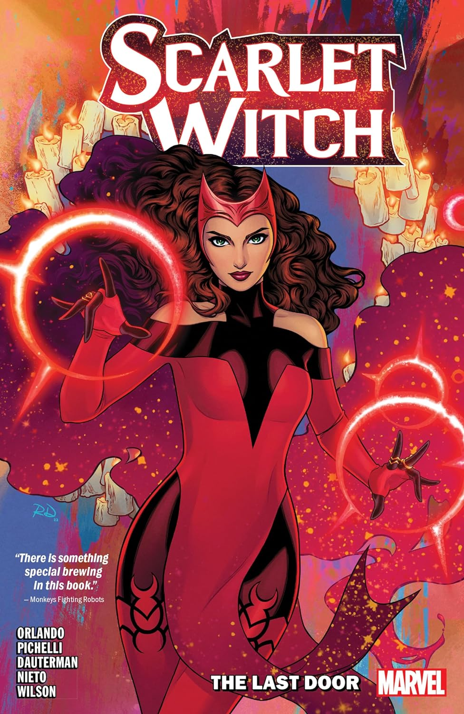

The Scarlet Witch is a character appearing in American comic books published by Marvel Comics and first appeared in The X-Men #4 (March 1964) in the Silver Age of Comic Books. Originally said to have the ability to alter probability, the Scarlet Witch has been depicted as a powerful sorceress since the 1980s and on occasion has become powerful enough to alter reality by tapping into greater energy sources.
